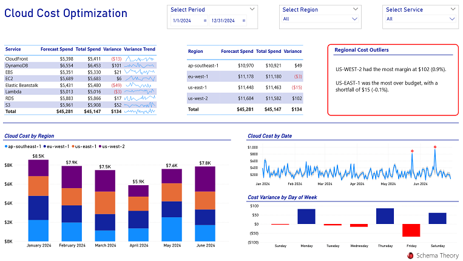

Cloud Cost Optimization
Description
This Power BI dashboard helps monitor and reduce cloud spend across AWS, Azure, and GCP.
Visual Example

Key Metrics
- Daily Cloud Spend by Service
- Underutilized Reserved Instances
- Forecast vs. Actual Spend
- Cost Spikes and Anomalies
Usage Notes
This dashboard is based on mocked cost data. You can connect it to AWS Cost Explorer, Azure Cost Management, or BigQuery Billing exports.